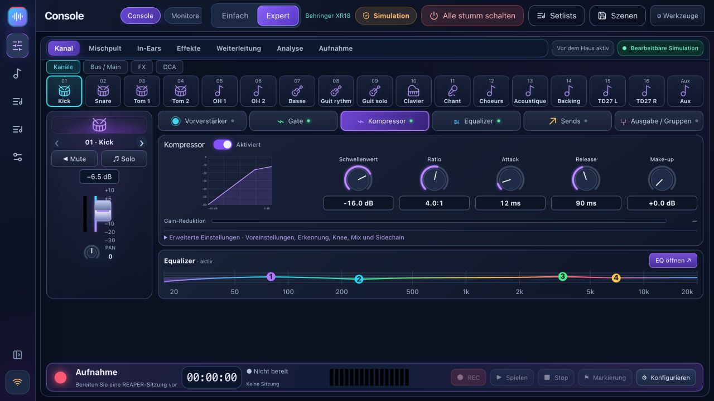
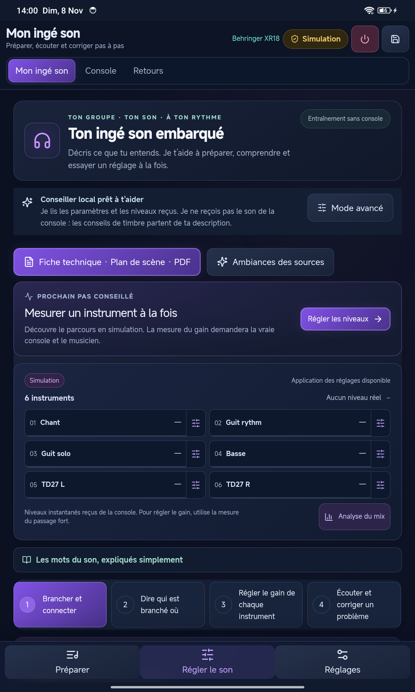

Technical Rider und Bühnenplan
Plane Eingänge, Musiker, Monitore und Anschlüsse. Platziere die Band auf dem Bühnenplan und drucke ihn aus oder exportiere ein PDF. Ein direkter Zugang ist im Soundcoach sichtbar.
Steuere dein Behringer X-Air oder Midas M-Air, bereite den Soundcheck vor und passe den Monitormix für jeden Musiker an. BandPilot ist kostenlos, lokal und für Bands gedacht, auf Computer und Android-Tablet. Unterstützte Modelle und Einschränkungen findest du weiter unten.
XR18 / X18 · MR18 · XR12 / MR12 · teilweise X32 – siehe Funktionen und Validierung unten.

Die Neuerungen vom 6.–8. November 2026 verbinden Bandvorbereitung und Mischpultsteuerung auf dem Computer und auf Android-Tablets.
Plane Eingänge, Musiker, Monitore und Anschlüsse. Platziere die Band auf dem Bühnenplan und drucke ihn aus oder exportiere ein PDF. Ein direkter Zugang ist im Soundcoach sichtbar.
Wähle einen passenden Effekt für Stimme oder Instrument, prüfe den Vorschlag und dosiere ihn für jeden Monitormix. Übernimm das Ergebnis oder stelle die vorherigen Einstellungen wieder her.
Installiere die APK auf einem kompatiblen Tablet und verbinde es direkt per WLAN mit dem Mischpult. Oberfläche, Steuerung und Daten laufen auf dem Tablet: ohne PC oder Docker.
Versionen 2.3.2 und 2.3.3 verbessern außerdem die Wiederherstellung von Effekten, die Instrumentbestätigung und die Windows-Installation. Diagnoseberichte helfen bei GitHub-Issues; Updates werden beim Start gesucht.
Installiere die APK auf einem kompatiblen Tablet und verbinde es direkt per WLAN mit dem Mischpult. Oberfläche, Steuerung und Daten laufen auf dem Tablet: ohne PC oder Docker.
Android-Version: 2.4.0-android.3. Android 8+ und Android System WebView 111+. APK für ARM mit 32/64 Bit und x86_64; Hoch- und Querformat.
Installation und Start auf einem Xiaomi Redmi Pad mit Android 14 geprüft; Funktion vom Nutzer bestätigt. Andere Tablets und Mischpultkombinationen müssen noch geprüft werden. Geräte mit 16-KB-Speicherseiten sind nicht zertifiziert. REAPER und die auf Aufnahmen basierende Klangwerkstatt bleiben Desktop-Funktionen.

Français · English · Italiano · Español · Deutsch
Wähle die Sprache unter Einstellungen → Optionen · Sprache, ohne Neustart. Menüs, Bedienelemente, Hilfe und Bestätigungen folgen deiner Auswahl. Jeder Musiker kann die Sprache auf seinem Telefon selbst wählen.
Die Einstellung wird auf diesem Gerät gespeichert; Ihre Song-, Szenen- und Musikernamen bleiben unverändert. Weitere Sprachen können auf Anfrage hinzugefügt werden. Fordern Sie eine Sprache an
Ein Blick auf BandPilot 2.2.4: farbige Kanäle, Signalbearbeitung und persönliche Monitormischungen. Zum Vergrößern auf ein Bild klicken. Die Detailansichten unten sind auf Französisch.


Persönliche Layouts speichern sichtbare Kanalzüge, Kanalbreite und Sichtbarkeit des Ausgabefelds je nach Mischpultmodell und Bildschirmgröße. Das Monitorpult vereint den Mix, den Bus-EQ und den Kompressor jedes Musikers.
REAPER Bridge 1.2.3 isoliert gleichzeitige Anforderungen und wiederholt vorübergehende Dateisperren, ohne den Aufnahmebefehl erneut auszuführen.
Entdecken Sie 2.2.2 →Erweiterte Funktionen hängen vom Mischpult ab. Die Matrix erklärt, was verfügbar ist und was experimentell bleibt.

Sechs Schritte: Anschließen, Instrumente zuordnen, Verstärkung messen, Fehler beheben, Monitore vorbereiten und speichern. Der Trainer liest die Mischpult-Messungen, nicht Ihre Audiodaten.

Kompakte Navigation, Kanalbänke, Hauptmix, Busse, DCAs und Kanalverarbeitung. Vorverstärker, Gate, Kompression, EQ, Sends, Effekte und Routing sind modellabhängig.
Ein persönlicher QR-Link nur für jeden Musiker und seinen Bus. Fader, Stummschaltung, gespeicherte Profile und begrenzte Pegel. Kontrollberechtigungen werden aktualisiert, ohne dass ein Neuladen erforderlich ist.
Nur mit Backing-Tracks oder Band: Abschnitte, Takes, Wellenformen, Präsenz, Originalwiedergabe, Loops und Marker. Erfordert REAPER Bridge 1.5.0.
Bereiten Sie eine Sitzung vor, wählen Sie Titel aus, zeichnen Sie 24-Bit-WAV auf und überwachen Sie den Transport. Multitrack-USB auf XR18/MR18/X18; XR12/MR12 verwenden einen Stereo-USB-Stick-Recorder.

Auf Ihrem Computer gespeicherte Songbibliothek, Setlists, Proben und Notizen. Zeigen Sie Transport, Abschnitte und Songenden mit konfiguriertem REAPER/ReaCue an.
Mischpult-Status erfassen, JSON importieren/exportieren, Änderungen in der Vorschau anzeigen und vor dem Abruf ein Backup erstellen. Beim geführten Szenenabruf ist die Phantomspeisung standardmäßig ausgeschlossen.
X-Air-Messgeräte und -Spektrum, A/B-Beratung, optionale Konten und Diagnose. Die optionale vernetzte KI verwendet Ihren eigenen Schlüssel; Für ReaCue und native Szenen gelten dokumentierte Grenzen.

Mit der Simulation können Sie Einstellungen erkunden und vorbereiten. Simulierte Pegel werden niemals als reale Messwerte dargestellt. REAPER bleibt eine echte Audioanwendung.
Discovery liest die Mischpult-Identität in Ihrem lokalen Netzwerk. Name, Marke und Bedienelemente passen sich an; Unbekannte Modelle werden abgelehnt. Verbindungen beginnen schreibgeschützt.
| Modell | Fähigkeiten | Status in dieser Version |
|---|---|---|
| Behringer XR18 / X18 | 16 Mono-Kanäle + Stereo-Aux · 6 Aux-Ausgänge · 18×18 USB | Hauptfamilie. Hardwareprüfungen am XR18 durchgeführt; X18 muss noch bestätigt werden. |
| Midas MR18 | 16 Mono-Kanäle + Stereo-Aux · 6 Aux-Ausgänge · 18×18 USB | Profil und Protokoll in Simulation getestet; Hardware-Validierung steht noch aus. |
| Behringer XR12 / Midas MR12 | 12 Eingänge · 4 Mikrofonvorverstärker · 2 physische Aux-Ausgänge | Angepasste Benutzeroberfläche und Grenzwerte. Stereo-USB-Stick-Aufnahme, keine PC-Mehrspurschnittstelle. Hardware-Validierung steht aus. |
| Behringer X32 / Rack / Compact / Producer / Core | 32 Kanäle · 16 Busse · 8 DCAs · 6 Matrizen | EXPERIMENTAL / TEILWEISE: Mischen, EQ, Kerndynamik und Sends. Vollständige Vorverstärker-, Routing-, FX-, Meter-, Szene- und USB-Unterstützung nicht verfügbar. |
Eine Montage von Screenshots der BandPilot 2.2-Simulation, ohne Audio- oder Hardwaresteuerungsdemonstration. Kapitel und ein Transkript begleiten das Video.
Wählen Sie das richtige Installationsprogramm, erkunden Sie die Simulation, stellen Sie eine schreibgeschützte Verbindung her und bereiten Sie ein Backup vor.
Vollständige Anleitung →Sechs erklärte Schritte, reale Messungen, Vorschläge zur Überprüfung, Monitore und eine gespeicherte Szene.
Soundcheck-Coach Schritt für Schritt →Installieren Sie Bridge 1.5.0, öffnen Sie Ihr Projekt, überprüfen Sie die aktivierten Spuren, wählen Sie Takes aus und wiederholen Sie einen Abschnitt.
REAPER →Desktop: neueste stabile Version (Windows, macOS, Linux). Android: 2.4.0-android.3 Vorabversion, separates APK.
Um Instrumente zu trennen, an Liedtexten zu arbeiten und Songs für REAPER vorzubereiten, entdecke BandStudio (auf Englisch), eine eigenständige, ergänzende App.
BandPilot ist der neue Name von XR18 Studio. Sichern Sie Szenen vor dem Aktualisieren. Legacy-Datenidentifikatoren bleiben erhalten.
Ja. BandPilot ist kostenlos und Open Source unter der MIT-Lizenz. REAPER ist eine separate Software mit eigener Lizenz.
Nein. Die Funktionen hängen vom Modell und der Validierung ab. Die X32-Unterstützung ist teilweise und experimentell. Überprüfen Sie die Matrix vor dem Live-Einsatz.
Nein. Es liest verfügbare Mischpulteinstellungen, Messgeräte und Messungen. Der Hörratschlag beginnt mit Ihrer Beschreibung und erfordert einen Gehörtest.
Die lokale Steuerung funktioniert ohne Internet oder Konto. Computer, Mischpult und Telefone müssen sich ein lokales Netzwerk teilen. Die optionale vernetzte KI erfordert Internet und Ihren eigenen API-Schlüssel.
BandPilot ist der neue Name. Das Repository und die alten technischen Kennungen werden beibehalten, um den Verlauf und die Daten zu bewahren. Sichern Sie Ihre Szenen, bevor Sie sie aktualisieren.
Ein Ort, an dem Musiker einander bei Soundchecks, Monitormischungen, Proben und Aufnahmen helfen. Alle Instrumente, Bands und Erfahrungsstufen sind willkommen.
Verbindung, Soundcheck, Saal, Bühnenmonitore, In-Ears oder Kopfhörer: Beschreibe dein Setup und tausche dich mit anderen aus.
Tipps, Setups und Erfahrungen aus der Praxis. Nenne das Mischpultmodell und unterscheide Simulation von Tests mit echter Hardware.
Schlage eine Idee vor, diskutiere Verbesserungen oder teste Vorabversionen.
Stelle Fragen, teile Erfahrungen und schlage Verbesserungen für BandPilot vor. Austausch auf Französisch oder Englisch.
Öffne in den neuen Versionen „Hilfe und Probleme“ über das Menü oder die Einstellungen: Hilfe in #entraide-help, Einstiegshilfe, Ideen und Fehlermeldungen in #bugs-tests. Die Nachricht enthält die App-Version: Prüfe sie, kopiere sie und sende sie selbst in Discord. Protokolle oder Audio werden nicht automatisch angehängt.
Mehr Zeit zum Spielen, weniger Zeit beim Suchen nach Einstellungen. BandPilot hilft Bands, ihren Soundcheck vorzubereiten und vertraute Einstellungen wiederzufinden – kostenlos und quelloffen.
Zeit, um Probleme nachzustellen, Fehler zu beheben und Installationspakete für Windows, macOS, Linux und Android zu pflegen.
Dokumentierte Tests mit verschiedenen Mischpulten, Instrumenten und Abhörsituationen: Saal, Bühnenmonitore, In-Ears, Kopfhörer und gemischte Konfigurationen.
Klarere Anleitungen, Übersetzungen und verständliche Abläufe für Musiker aller Erfahrungsstufen.
Die Unterstützung ist freiwillig. BandPilot bleibt unter der MIT-Lizenz kostenlos verfügbar. Sie schaltet keine kostenpflichtigen Funktionen frei und garantiert weder Termine noch neue kompatible Mischpulte oder bestimmte Klangergebnisse. Prioritäten richten sich nach beobachtetem Bedarf und Tests.